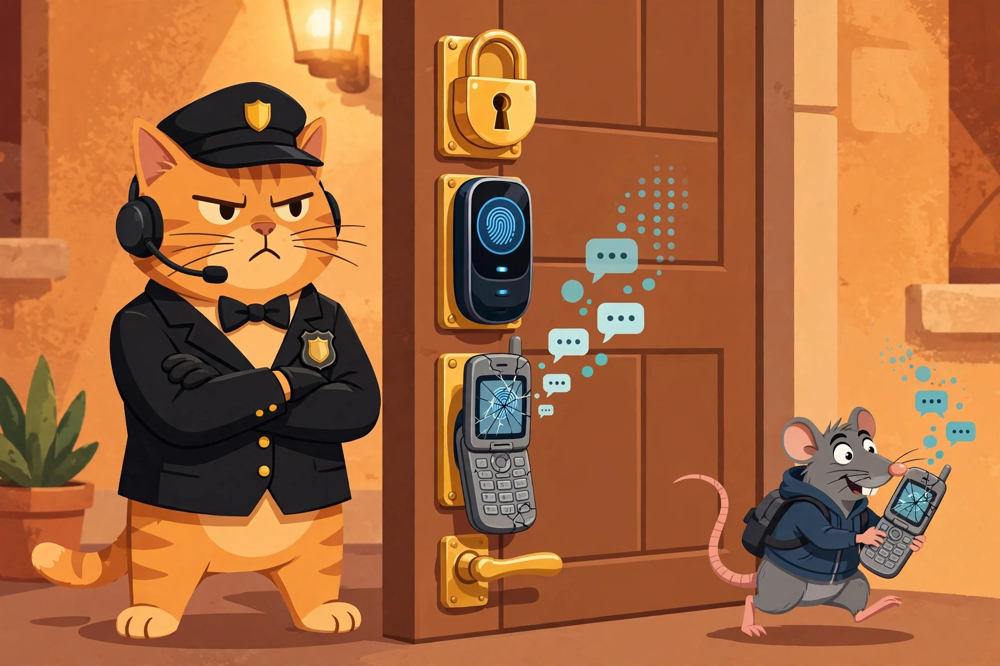

What Is MFA, and Why Are SMS Codes the Weak Link?

The bouncer cat guards three locks — padlock, fingerprint scanner, cracked flip phone — while a rat sneaks off with the texts. Guess which lock the burglar picks first.
Your password is already out there. Act like it.
Assume your password leaked in one of the big breaches of the last decade. Statistically, it probably did — billions of credentials from breaches like Collection #1 are floating around for anyone to buy. Multi-factor authentication is the thing standing between that leaked password and your inbox, your bank, and your company's VPN. It's the second lock on the door. This post is about how that lock works, and why one particular version of it — the text-message code — is the lock a burglar would pick first.
The three kinds of "proof"
MFA is just a fancy way of asking for two different kinds of proof that you are you. There are only three kinds:
- Something you know — a password, a PIN.
- Something you have — your phone, a hardware key.
- Something you are — your fingerprint, your face.
Your password is category one. MFA demands a second category. That's the entire idea. Everything else is implementation detail — and the implementation details are where it gets interesting, because not all second factors are created equal.
Where MFA lives in the real world
When you log in to work on Monday morning, the MFA prompt doesn't come from nowhere. There's a whole stack behind it:
- The identity provider is the bouncer. Something like Microsoft Entra ID (the new name for Azure AD) or Okta is the system that actually asks "who are you?" and enforces the MFA policy — which apps require a second factor, which users are exempt, and what counts as a valid one. If your company says "no SMS codes allowed," it's the identity provider that enforces that.
- The authenticator is your badge. Microsoft Authenticator or Duo on your phone generates time-based one-time codes or sends you an approve/deny push. The hardware upgrade path is a FIDO2 security key (like a YubiKey): a little USB/NFC stick that does phishing-resistant authentication — more on why that word matters in a minute.
- The VPN checks at the door too. Remote access tools like Palo Alto GlobalProtect or a firewall's VPN portal ask for MFA before they let a laptop onto the corporate network. A stolen password alone gets an attacker nothing if they can't get past the tunnel.
- The SOC watches the bouncer. When someone gets in despite MFA — a stolen session cookie, an attacker approving pushes at 3 AM — that's where the EDR (CrowdStrike Falcon, SentinelOne) and the SIEM (Splunk, Microsoft Sentinel) come in. The EDR sees the weird process or token reuse on the endpoint; the SIEM correlates it — say, a successful logon right after a burst of 40 denied push notifications. That's MFA fatigue (a.k.a. push bombing), and good SOCs have a detection rule for exactly that pattern.
- The helpdesk cleans up. When an account gets locked or a user loses their phone, ITSM/ticketing (ServiceNow) is where the reset request lands — and the helpdesk's identity-verification step is itself a security control, because attackers love to social-engineer helpdesks into resetting MFA for them.
So: identity provider asks, authenticator proves, VPN/firewall checks the tunnel, EDR/SIEM watch for the bypass, ITSM handles the aftermath. MFA isn't a feature; it's a workflow.
Why SMS codes are the weak link
Texting you a 6-digit code feels secure. It isn't — not the way people think. Three reasons:
1. Your phone number isn't yours. Attackers SIM swap: they call your carrier, pretend to be you ("I lost my phone, please move my number to this new SIM"), and suddenly your texts go to their device. This isn't theoretical — SIM swapping has emptied crypto wallets and taken over high-profile social media accounts. Your second factor just got rerouted to the attacker by a customer-service rep.
2. SMS is a postcard, not a letter. Text messages travel over the old telecom signaling network (SS7) in the clear. Interception — via compromised carrier infrastructure, rogue cell towers, or grey-route services — is a documented, real-world attack. A code sent by SMS can be read by parties it was never meant for.
3. Phishing eats SMS codes for breakfast. An attacker-in-the-middle phishing kit (tools like Evilginx made this point-and-click years ago) shows the victim a perfect copy of the real login page, captures the password and the SMS code, and forwards both to the real site in real time. The code works, the attacker logs in, the victim sees a normal-looking login. The second factor verified a human was present — it just didn't verify which human.
That last point is the deepest one: an SMS code proves "someone has the phone." A phishing-resistant factor like FIDO2 proves "someone has the phone and they're talking to the real site" — the cryptographic exchange is bound to the site's identity, so a fake page can't relay it. That's what the word phishing-resistant actually means.
The hierarchy of second factors
Rank them like this, best to worst:
- FIDO2 hardware keys (YubiKey and friends) — phishing-resistant, no shared secret.
- Authenticator apps — time-based codes or push (with number matching) bound to your device.
- SMS codes — better than nothing, vulnerable to everything above.
- No MFA — the unlocked door.
SMS-based MFA is still infinitely better than no MFA. Attackers are lazy; most credential-stuffing bots don't bother with SIM swaps. Turn on whatever second factor your accounts offer today — then level up to an authenticator app, and if you're serious, a hardware key.
The takeaway
MFA works because it forces the attacker to win twice: steal what you know and steal what you have. SMS codes are the weakest version of that second win — the phone number can be hijacked, the message can be intercepted, and the code can be phished in real time. The fix isn't to skip MFA; it's to climb the hierarchy: authenticator app first, hardware key when you're ready. And remember the stack behind the prompt — the identity provider that enforces it, the VPN that checks it, the EDR and SIEM that watch for the bypass, and the helpdesk that cleans up when it fails. None of these tools works alone. That's the theme of this whole series, and it'll keep coming back.
Next time, we go from defense to offense: the attackers who bypass MFA don't bother with your locks — they just trick you into opening the door. In LV 7 · LAB — "Automate a phishing triage playbook end to end," we'll build the workflow that catches their fake login pages: where the email lands, where the sandbox detonates it, and where the ticket gets opened before anyone clicks.